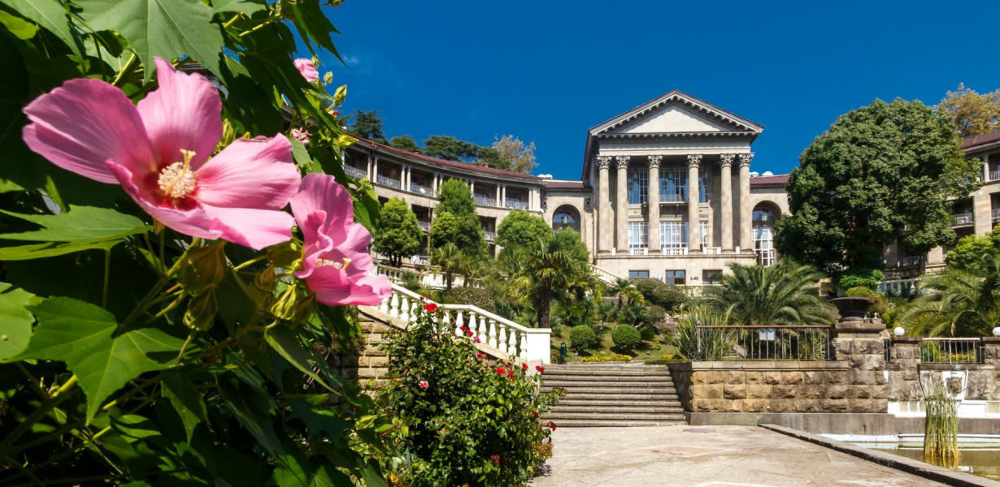

Санатории

Дорогие друзья! Бальнеологический курорт «Мацеста» работает для вас круглый год!
Путевка в санаторий с лечением на «Мацесте» — оптимальный выбор для оздоровления по системе «все включено».
По вопросам бронирования путевок с лечением на «Мацесте» в санатории города Сочи звоните по телефону бесплатной линии по РФ
8 (800) 301-04-25
8 (800) 301-04-25
Путевки в санатории города Сочи принято разделять на 2 категории:
1. Путевка с лечением на Мацесте
Лечебная составляющая данного типа путевок включает курс бальнеологических процедур «Мацесты» и процедуры на базе санатория
* Мацестинские процедуры включаются санаторием в путевки строго при наличии у отдыхающего не менее, чем 13 суток по путевке, а в некоторых
санаториях- не менее 18 суток.

Купить путевку с Мацестой
В этом разделе представлены санатории города Сочи, в путевку которых включен курс
процедур бальнеологического курорта «Мацеста
2. «Общетерапевтическая» или «Оздоровительная» путевка
Данный тип предусматривает наличие процедур на базе санатория, курс бальнеологических процедур «Мацесты» назначается врачом санатория
по прибытии, за дополнительную плату
*Количество дней пребывания по путевке должно быть не менее 13-14
<% for(let i = 0; i < 3; i++) { %>
 <% } %>
<% } %>
Аппаратная
физиотерапия
Санаторный отдых предполагает методичное движение от одной процедуры к следующей в течение дня, иногда останавливаясь на завтраки, обеды, полдники и ужин. По Вашему желанию — график процедур может быть составлен так, чтобы уже после обеда Вы оказались совершенно свободны. В городе Сочи всегда есть чем заняться и что посмотреть — можно отдохнуть на море, отправиться в близлежащие горы, посетить музеи, выставки, спектакли, концерты, съездить на экскурсию (как правило в каждом санатории работает экскурсионное бюро, а некоторые санатории предлагают своим отдыхающим трансфер на концерты и зрелищные мероприятия). Изумительной красоты природа и мягкий субтропический климат, безусловно, дополняют лечебный эффект.
Расписание Вашей жизни в санатории строго индивидуально и будет составлено врачами санатория в день вашего прибытия. В случае противопоказаний к сероводородной бальнеотерапии, врач санатория может назначить радоновые или процедуры на природной йодобромной воде Кудепстинского месторождения, которые также отпускаются в мацестинской бальнеолечебнице. В санаториях мацестинские процедуры назначают строго через день и чередуют с процедурами, оказываемыми на базе санатория: физиопроцедуры с магнитами и тракциями, озонотерапия, ароматерапия, массажи, аппараты для снижения веса и прочие процедуры.
Расписание Вашей жизни в санатории строго индивидуально и будет составлено врачами санатория в день вашего прибытия. В случае противопоказаний к сероводородной бальнеотерапии, врач санатория может назначить радоновые или процедуры на природной йодобромной воде Кудепстинского месторождения, которые также отпускаются в мацестинской бальнеолечебнице. В санаториях мацестинские процедуры назначают строго через день и чередуют с процедурами, оказываемыми на базе санатория: физиопроцедуры с магнитами и тракциями, озонотерапия, ароматерапия, массажи, аппараты для снижения веса и прочие процедуры.
Внимательно ознакомьтесь с новыми правилами получения бальнеологического и санаторно-курортного лечения
в текущих условиях здесь
Обязательно посмотрите
Купить путевку с Мацестой
В этом разделе представлены санатории города Сочи, в путевку которых включен курс
процедур бальнеологического курорта «Мацеста
Купить путевку с Мацестой
В этом разделе представлены санатории города Сочи, в путевку которых включен курс
процедур бальнеологического курорта «Мацеста
Санаторно-курортное лечение осуществляется строго при наличии санаторно – курортной карты по форме №072/у, для детей санаторно-курортной карты по форме №076/у-04 и справки о санитарно-эпидемиологическом окружении (отсутствие контактов с инфекционными больными). Мы рекомендуем оформить санаторно-курортную карту в поликлинике по месту жительства бесплатно, либо на платной основе в частной клинике, имеющей на это лицензию. Если Вы прибыли в санаторий без санаторно-курортной карты, то необходимо будет ее оформить в санатории. Это занимает 2-3 дня, стоимость оформления карты от 2500 руб. до 5000 руб. В этом случает процедуры (ни мацестинские ни процедуры, отпускаемые в санатории) врач санатория Вам не назначит, пока не будет готова санаторно-курортная карта. С картой вы сэкономите пару дней, и процедуры начнутся почти сразу.
По вопросам бронирования путевок с лечением на «Мацесте» в санатории города Сочи звоните по телефону бесплатной
линии по РФ 8 (800) 301-04-25